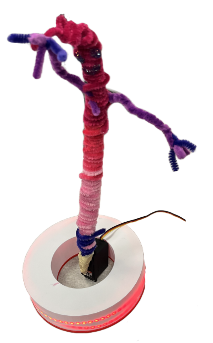
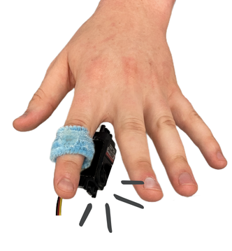
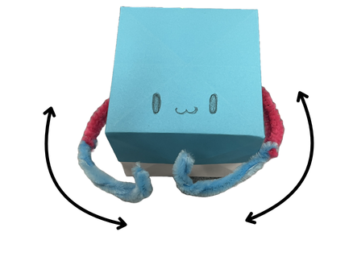
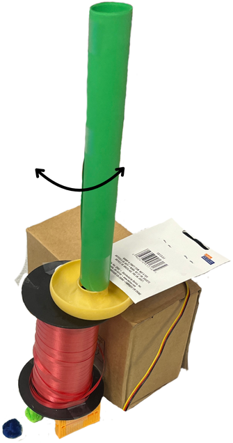
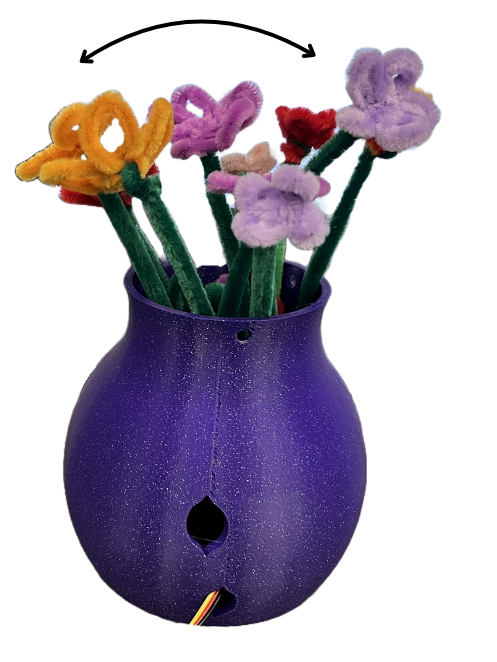

Signals feel opaque
Raw EDA, heart rate, or EEG data rarely explains itself.
Sensei helps students connect a biosensor, calibrate a personal baseline, and map changes in the body to light or movement.
Signal → State → Behavior, shown with the production lamp model.
SignalSense what the body is doing
StateInterpret a meaningful change
BehaviorGive that change physical form
Physiological computing asks novices to cross hardware, signal processing, interpretation, and interaction design—all at once.
Sensei makes that path visible and workable. It gives learners enough structure to start, then keeps interpretation and design judgment in their hands.
Raw EDA, heart rate, or EEG data rarely explains itself.
Device setup and code can eclipse the interaction idea.
The same bodily change can mean different things in context.
The starter folder keeps configuration, a device bridge, an example mapping, and output code together—so learners can see the whole Sensei pipeline before replacing the placeholders.
Begin with a legible project structure and setup notes.
Swap in your device bridge, personal baseline, and behavior mapping.
Connect the live signal to the physical output and keep iterating.
After the signal logic is in place, Sensei moves into physical form. Scroll through the real printable pieces as they settle naturally along their mounting axes.
Printable components join into a motorized flower and ambient lamp, then become interactive 3D files ready to inspect and download.
We studied Sensei across classroom sessions and design workshops, watching how novices moved from reading signals to debating what those signals should mean.
Sensei did more than simplify a pipeline. It gave learners a shared language for asking what bodily data should mean—and who gets to decide.
Teams transferred Sensei’s logic beyond the starter artifacts, imagining new forms for focus, stress, collective atmosphere, comfort, and connection.

Hover to playEEG focus

EDA · wearable

HR + EDA

Hover to playEEG stress

Hover to playExpressive movement
A teachable abstraction connecting live physiology to interaction behavior.
An end-to-end toolkit spanning sensors, calibration, authoring, and tangible outputs.
Evidence from real learning contexts showing where novices need clarity—and where ambiguity is productive.